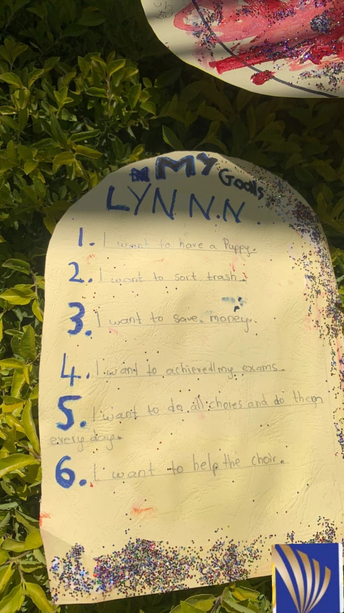
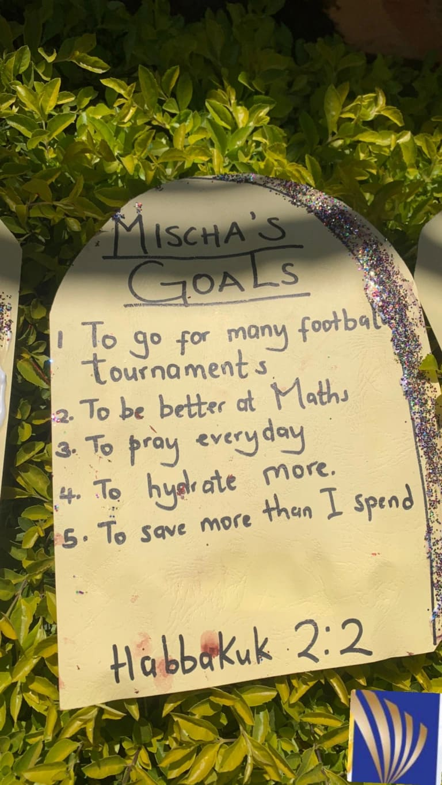

Happy New Year Everyone!!! It feels good to be back at our favorite creating center where learning is fun.
This week our lesson was on goal setting. A goal is something that you aim for and you are never too young to start setting your goals. With the help of our amazing teachers, they challenged us to write down our goals.
We read from Habakkuk 2:2 that says “Write down clearly on tablets what I reveal to you, so that it can be read at a glance”. When you write down your goals you are able to remember them clearly and daily. Our teacher shared with us a story of Mzee Baraza.
Mzee Baraza was 80 years old and his goal was to go to school. He asked his grandchild to write down the word “SCHOOL” for him on a piece of paper. Every morning Mzee Baraza would look at that piece of paper and remember his goal despite the fact that other people laughed at him. Eventually Mzee Baraza was able to go to school and achieved his goal.
We were inspired by Mzee Baraza's story and so we wrote down our goals as below.
 We hope to inspire you to set your goals for the year and welcome you very much to join us at Amazing Kids Kenya.